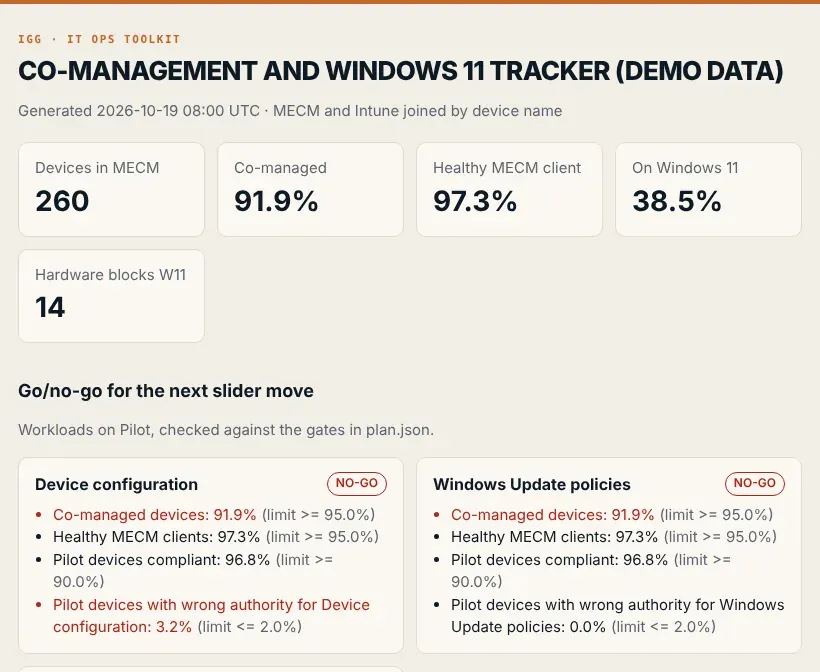

El siguiente paso del slider de co-management, el ajuste que pasa cada workload de MECM a Intune, recibe un NO-GO: solo el 91,9 % de los equipos está co-gestionado y un equipo del piloto no ha recogido el cambio. Así lo detecta en su demo el seguimiento que acompaña a este post, con una empresa inventada de 260 equipos a mitad de migración.
En una migración a co-management y Windows 11, cada reunión de seguimiento pregunta cuántos equipos están de verdad co-gestionados, qué se rompe si un workload pasa a Intune para todos y si la siguiente ola acabará a tiempo. Las respuestas están en dos consolas que no comparten informe.
Cinco estados para cada equipo
Una consulta SQL de solo lectura lee las vistas de informes de MECM sobre salud del cliente, build del SO y colecciones, y una exportación en PowerShell saca de Intune managedDevices con configurationManagerClientEnabledFeatures. La herramienta los cruza por nombre de equipo en cinco estados: co-gestionado, solo MECM (sin inscribir), inscrito fuera de co-management, en MECM sin cliente y solo Intune. Para cada equipo co-gestionado compara la autoridad por workload que espera el plan con la que informa Intune, y sigue cada ola de Windows 11 y el hardware que impide la actualización.
Un go/no-go listo para la petición de cambio
gates.md da GO o NO-GO para cada workload en Pilot frente a límites acordados en plan.json, listo para pegar en la petición de cambio. Funciona con la librería estándar de Python, con 14 tests y un playbook para usarlo junto al comité de cambios.
Cómo usarlo con datos reales
Hay que ejecutar la consulta SQL contra la base de datos del sitio MECM y la exportación de Intune desde Graph, escribir los workloads, olas y gates en plan.json, y llevar gates.md a cada comité de cambios (CAB) antes de mover el slider.
De dónde sale
Nace de la migración a Windows 11 que lideré: casi todo el esfuerzo no está en la actualización, sino en encontrar los equipos que no están donde dice el plan. Acordar los gates antes del CAB, y no durante, ahorra las discusiones más largas.
¿Quieres llevarlo a tu entorno o adaptarlo a tu caso? Escríbeme y lo vemos.
Tech Career Lab · newsletter
¿Te ha servido? Cada dos semanas envío una idea práctica para perfiles IT: LinkedIn, proyectos, networking y procesos de selección.
Apúntate y llévate las 33 ideas →